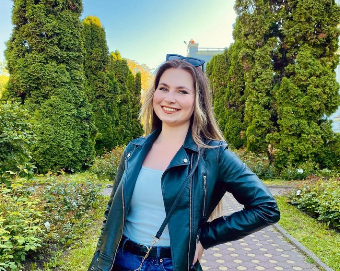

My Resume

 Summary
Summary
Detail-oriented and highly motivated professional with a Master's degree in Accounting Expertise and Audit. I have six months of accounting experience, but I have also had a passion for web design since an early age. Quick to learn and meticulous in my approach, I am known for delivering precise work and embracing innovative thinking. With a keen eye for detail, I am eager to contribute my diverse skill set to enhance an organization's success and growth.
 Education
Education
- "Babes-Bolyai" University - Faculty of Economics and Business Administration
Bachelor of Business Information Systems (2023-Present)
- "Babes-Bolyai" University - Faculty of Economics and Business Administration
Master's of Accounting Expertise and Audit (2021-2023)
- "Babes-Bolyai" University - Faculty of Economics and Business Administration
Bachelor of The Economics of Commerce, Tourism and Services (2018-2021)
- "Salamon Erno" High School
Mathematics and Computer Science (2014-2018)
 Work experience
Work experience
-
Pyronova Group:
- Junior Accountant - (Jan 2023 - Present)
- Assistant of Realisation Department - (Nov 2021 - Jan 2023)
 Skills
Skills
- Technical skills:
- SAP Business One
- Microsoft Word, Excel, Powerpoint
- HTML/CSS
- Adobe Photoshop
- Soft skills:
- Communication
- Emotional intelligence and empathy
- Adaptability and flexibility
- Time management and organization
- Creativity and innovation
 Certifications
Certifications
- B2 First English Certificate - Cambridge University Press & Assessment English